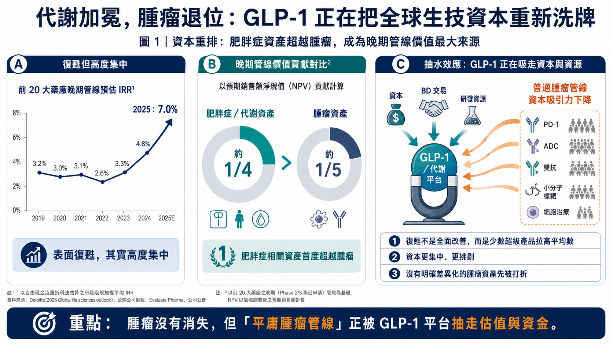
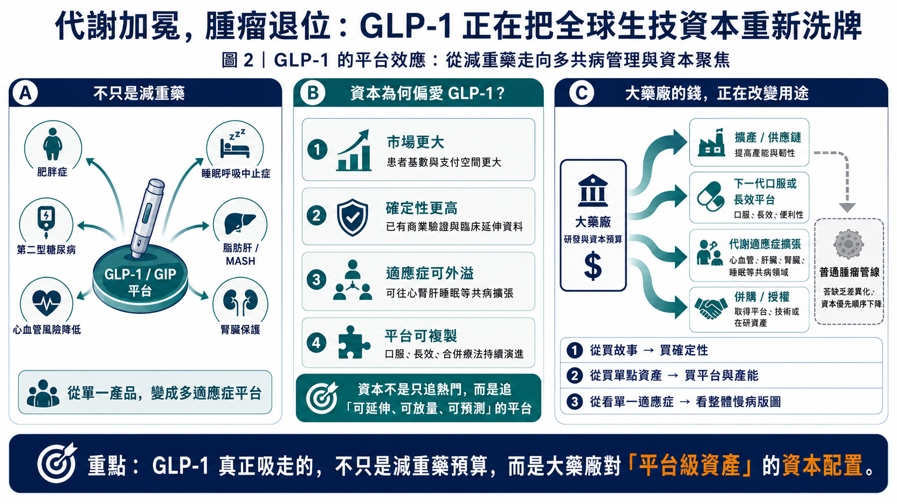
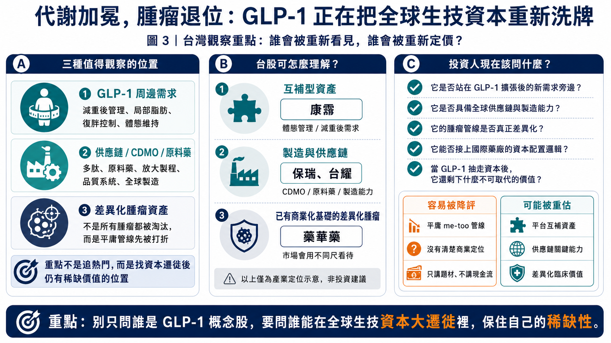

過去幾年，全球生技圈最擁擠的賽道一直是腫瘤。
PD-1、雙抗、ADC、小分子標靶、細胞治療，一波接一波，從大型藥廠到早期新創，幾乎都在想辦法往癌症裡面擠。因為癌症市場大、定價高、未滿足需求明確，只要臨床數據夠漂亮，就有機會被國際大藥廠看上。
但現在，市場正在出現一個很殘酷的變化，「普通腫瘤管線」的資本吸引力正在快速下降。真正把錢吸走的，不是另一個腫瘤藥，而是 GLP-1。
GLP-1 過去被很多人簡化成「減重藥」或「瘦瘦針」，但這個理解已經太淺。現在的 GLP-1，正在變成全球藥廠重新配置研發預算、產能投資、併購策略與授權談判籌碼的核心變數。
📌 GLP-1 正在造成一場生技資本市場的「抽水效應」。

【藥時事 與 CMoney 全曜財經共同打造減肥藥賽道投資課程】
藥時事團隊深度分析全球 減肥藥市場現況、新藥開發進程、臨床使用情況，並且完整講解了減肥藥物的投資邏輯，以及市場正在著重關注的標的。藥時事團隊的深度課程將能夠讓您成為專業的生技減肥藥專業達人、投資人：線上課程 - 理財寶｜提供全方位投資線上課程
【01｜德勤 7.0% 的漂亮數字，背後其實很不平均】
德勤（Deloitte）最新一版《Measuring the return from pharmaceutical innovation》報告顯示，全球前 20 大藥廠晚期研發管線的預估內部報酬率（IRR）在 2025 年回升到 7.0%，已經連續三年改善。
表面看起來，這像是大型藥廠研發效率終於從低谷爬起來，但拆開來看，這個復甦其實非常集中。
德勤提到，肥胖症相關資產已經在其 16 年追蹤中第一次超越腫瘤，成為晚期管線價值的最大貢獻來源。肥胖症資產約占晚期管線預估銷售價值的四分之一，而腫瘤則降到約五分之一。更關鍵的是，GLP-1 / GIP 類資產對整體報酬率的拉抬非常明顯。換句話說，全球藥廠 R&D 報酬率看起來變好，不代表整個產業一起變健康，而是少數超級產品把平均數往上拉。
這裡的差別很重要。
📌 如果一個產業的復甦，是靠很多領域同步改善，那代表底層景氣真的變好。
📌 但如果復甦主要靠少數代謝資產撐起來，那代表資本會更集中、更挑剔，也更不願意把錢撒到看起來差不多的管線。
這就是腫瘤 Biotech 最尷尬的地方。
過去只要你有一個看起來不錯的腫瘤靶點，臨床前或早期數據稍微亮眼，就可能有大型藥廠願意先買一張未來門票。但現在，藥廠 CFO 看的不是「這個腫瘤藥有沒有故事」，而是「這筆錢拿去做 GLP-1 產能、代謝適應症拓展、或買下一個更大平台，報酬是不是更確定」。

【02｜腫瘤不是退位，是平庸腫瘤管線先被退場】
這波變化不能簡單解讀成「腫瘤完了」。
癌症仍然是全球醫療裡最重要的戰場之一，真正有差異化、有明確生物標記、有清楚臨床定位的腫瘤藥，仍然會有價值。問題在於，過去幾年太多公司都在做相似靶點、相似機制、相似患者族群，最後擠成一個很難算帳的市場。大藥廠不是不買腫瘤藥，而是不想再為「只比現有療法好一點點、又需要大三期燒錢驗證」的管線付高價。
這一點在授權市場特別明顯。
以前的邏輯是，癌症定價高，所以只要有機會跑出數據，就值得先卡位。現在的邏輯變成，若一個腫瘤資產沒有非常明確的差異化，沒有能說服臨床醫師改變治療習慣的優勢，也沒有能支撐商業化放量的患者分層，那它在大型藥廠模型裡就會被打折。
📌 可以接受腫瘤仍然高風險，但不能接受花大錢買一個看不出真正差異的高風險。
📌 可以接受早期資產還不完美，但不能接受它在進入三期前，連「為什麼非買不可」都講不清楚。
這也是為什麼很多腫瘤公司會感覺募資更難、BD 更慢、估值更硬。不是投資人突然不懂科學，而是整個資本市場正在問更現實的問題：你到底是下一個平台，還是下一個被淘汰的 me-too？
【03｜GLP-1 為什麼可以抽走這麼多資本？因為它不只是一個適應症】
GLP-1 最可怕的地方，不是減重效果好。
真正的威力在於，它正在從糖尿病、肥胖症，往心血管、睡眠呼吸中止症、脂肪肝、腎臟病、甚至更多慢性病共病管理延伸。
美國 FDA 在 2024 年 3 月核准 Wegovy（semaglutide，司美格魯肽）用於降低有心血管疾病且過重或肥胖成人的心血管死亡、心肌梗塞與中風風險。這讓 GLP-1 從「體重控制」進一步走向「心血管風險管理」。同年 12 月，FDA 又核准 Zepbound（tirzepatide，替爾泊肽）用於合併肥胖的中重度阻塞性睡眠呼吸中止症成人患者。這更進一步證明，GLP-1 / GIP 類藥物已經不只是單一減重市場，而是在切入肥胖相關疾病的整套醫療支出結構。
白話講，這是一個治療平台正在改寫醫療資源分配。
只要 GLP-1 能降低體重、改善代謝、影響心血管風險，甚至改變睡眠呼吸中止症與脂肪肝治療路徑，那其他心血管、腎臟、肝病、代謝共病相關的新藥，就會被迫回答一個更難的問題：「你跟 GLP-1 比起來，到底多了什麼？」
很多新藥過去只要證明自己比安慰劑好，就有開發價值。但在 GLP-1 成為慢病平台之後，很多領域的新藥不只要證明有效，還要證明能和 GLP-1 互補、疊加，或解決 GLP-1 解決不了的問題。
📌 這就是資本抽水效應。
錢不是消失了，而是流向更確定、更大、更能延伸適應症的平台。剩下的領域，若不能證明自己不可取代，就會被迫用更低估值、更長等待、更嚴格數據來換取同樣一筆資金。
【04｜大型藥廠的錢，正在從「買故事」變成「買產能、買平台、買確定性」】
GLP-1 對大型藥廠的另一個改變，是產能。
腫瘤藥時代，很多公司可以用相對輕資產的方式推進。研發、臨床、製造、銷售可以拆給不同夥伴處理，只要管線有價值，就有機會靠授權與外部合作往前走。
但 GLP-1 不一樣。
這類產品牽涉多肽合成、原料藥、無菌注射劑、灌裝、裝置、全球供應鏈與品質系統。需求一旦爆掉，不只是臨床數據要贏，供貨也要跟得上。諾和諾德（Novo Nordisk）與禮來（Eli Lilly）近年砸下大量資本支出擴產，就是因為 GLP-1 的競爭不只在實驗室，也在工廠、產線、供應鏈與全球配送能力。
這會讓資本配置更現實。
大型藥廠若有一筆錢，可以選擇買一個早期腫瘤資產，也可以拿去擴建 GLP-1 產能、補強代謝產品組合、投資下一代口服或長效平台。當後者的市場可見度更高，前者就必須拿出更強的理由。
這不是情緒問題，是資本效率問題。
尤其在 Keytruda、Opdivo 等免疫腫瘤大藥陸續面對專利懸崖壓力的背景下，大藥廠更不會把子彈浪費在「可能補不了洞」的普通資產。它們要的是能填補收入缺口、能延伸平台、能打開新治療範圍的資產。
所以腫瘤 Biotech 的估值會被重新分類。
✅ 有明確差異化、有特殊患者族群、有強臨床終點、有平台延展性的腫瘤公司，仍然會被市場認真看待。
⚠️ 但如果只是再做一個相似靶點、相似聯用、相似後線病人的故事，未來要拿到好價格會越來越難。
【05｜真正有機會的不是「下一個 GLP-1」，而是 GLP-1 旁邊的位置】
台灣公司真正比較有機會切入的，可能不是正面挑戰 GLP-1 主藥市場，而是站到 GLP-1 周邊的價值鏈裡。
📌第一種，是減重後市場與體態管理。
康霈（6919）的 CBL-514 主軸是局部減脂，不是傳統意義上的全身減重藥。公司公開資料提到，CBL-514 用於減少腹部皮下脂肪的臨床二期數據已達標，並把開發方向延伸到體重管理，目標是與 GLP-1 類減重藥形成互補，改善停藥後復胖等問題。
這條路的重點不是「我也是 GLP-1」，而是「GLP-1 帶來大量減重人口後，還有哪些未被滿足的外觀、局部脂肪、復胖管理與長期維持需求」。如果全球減重市場真的走向長期用藥與體態管理，這種互補型資產反而可能有自己的定位。
📌第二種，是製造與供應鏈。
保瑞（6472）是台灣製藥 CDMO 代表之一，證交所資料也提到保瑞具備大、小分子藥物從開發、測試、認證到製造、包裝與運送的服務能力。全球藥廠越重視供應鏈、品質系統、跨國製造與產能彈性，台灣具備國際法規經驗與製造能力的公司，就會更值得被放進觀察清單。
台耀（4746）則是從原料藥與 CDMO 的角度來看。GLP-1 熱潮帶出的不是只有藥品本身，還包括原料藥、胜肽、多肽合成、放大製程、品質系統與外包製造需求。台耀未必等於 GLP-1 純概念，但原料藥與 CDMO 能力會是台股投資人理解這波趨勢時不能忽略的一塊。
📌第三種，是不要被 GLP-1 擠掉的差異化腫瘤。
腫瘤不是沒有機會，而是估值邏輯變嚴格。像藥華藥（6446）這類已經有商業化產品、營收路徑與特定疾病定位的公司，跟還在早期講故事的腫瘤 Biotech，市場會用不同尺來看。未來台灣腫瘤新藥若要拿到更高評價，不能只說自己是癌症題材，而要說清楚患者分層、臨床終點、競品差異與國際授權價值。
【06｜這波不是題材輪動，而是估值規則改寫】
GLP-1 抽水效應最值得注意的地方，在於它不是短線熱門題材。它正在改變全球生技資本的三個問題。
📌第一，藥廠更重視確定性。能夠跨適應症放大、能帶來巨大市場、能被支付方接受的資產，會拿到更多資源。
📌第二，普通管線的容錯率下降。尤其是早期腫瘤、同質化 ADC、缺乏明確患者分層的小分子標靶，如果沒有很強的臨床理由，估值會越來越難撐。
📌第三，供應鏈重新變重要。過去大家愛講靶點與數據，現在還要看產能、原料、製程、品質、裝置與全球交付。GLP-1 讓製造從後台走到前台。
這會讓未來幾年的生技投資變得更分化。
好的公司會更貴，普通公司會更便宜；真正能進入大藥廠資本配置的資產會被追，講不清楚定位的管線會被冷落。腫瘤藥不是沒有未來，但「只要是腫瘤就有人買單」的時代，恐怕已經結束了。

【結語｜不要只看 GLP-1 熱不熱，要看它把誰的錢抽走】
📌 GLP-1 的影響，已經超過減重藥本身。
它正在把大型藥廠的研發資源、製造資本、BD 預算與投資人注意力，從過去最擁擠的腫瘤賽道抽出一部分，重新導向代謝、慢病、自免、供應鏈與互補型平台。有些公司會因為站在新趨勢旁邊而被重新看見；有些公司則會因為原本的故事太平庸，被市場慢慢降評。
投資人真正該關注的，已經不是題材名字有沒有 GLP-1，而是當 GLP-1 把全球生技資本抽走之後，這家公司還剩下什麼不可取代的價值。
【參考資料】Deloitte、Citeline、FDA 以及康霈、保瑞、台耀公開資料。
【免責聲明】本文僅為產業研究，不構成投資建議，請自行判斷並自負盈虧。